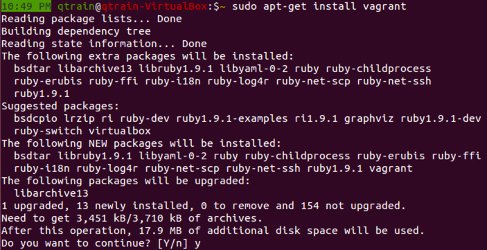

What the heck is it?
To understand vagrant we must first understand virtualization. Virtualization is the creation of a virtual (rather than actual) version of something, such as an operating system, a server, a storage device or network resources. Vagrant is a command line tool that works in conjunction with virtualization software like VirtualBox or VMWare. So, vagrant allows you to configure reproducible, portable environments right from the command line.
What do we mean by “reproducible portable environments"?
Let’s imagine a couple of scenerios to serve as an examples of just how useful Vagrant can be. You are a web developer working with a LAMP stack (Linux, Apache, MySQL, PHP) Now, say you want to work on your project, but, you aren’t on your main computer. You have to spend time installing Apache, MySQL and PHP. However, if you are using a Vagrant environment you can save a preconfigured machine and boot up a virtual disk that already has dependencies installed. Have you ever tried to work with a rails environment? If this is the case you might be working with different versions of rails, different gems, different databases etc. The configuration of a new system would be extremely time consuming, but, with vagrant all you have to say is vagrant up and you’ve conjured a new virtual machine.
But, this only scratches the surface of what you can do with Vagrant...
You can share custom boxes with other developers, publish work live to the web for client demos, network a bunch of vagrant boxes together or work with a multi-machine setup. Additionally, provisioning tools such as shell scripts, chef, puppet or unusable can be used to automatically configure the software on your machine.“whether you're working on Linux, Mac OS X, or Windows, all your team members are running code in the same environment, against the same dependencies, all configured the same way. Say goodbye to "works on my machine" bugs.” - Vagrant website

Create a vagrant machine in 8 Steps
Step1: First let's download virtualBoxsudo apt-get install virtualbox
Step 2: Next let's install vagrantsudo apt-get install vagrant
Step3: Next let's make a directory for our vagrant boxes mkdir vagrantBoxes Then we will change to that directory by using cd vagrantBoxes/

Step 4: Now we are ready to start a vagrant session with vagrant init hashicorp/precise32
This will place a vagrant file in our vagrantBoxes/ directory However, in this example I had to use a modified command shown below. If you run into an error saying that the box 'hasicorp/precise32 could not be found please check this link for the solution I used here
Step 5: we have just created a vagrantFile which contains configuration settings for your virtual machine so let's examine the vagrant file vim vagrantFile
This is only a small part of the configuration file, but, we can see that our box is going to use hashicorp/precise32 which is the 32-bit version of Ubuntu 13.04 precise pangolin. Other distributions can be found at HashiCorp's Atlas box catalog
Step 8: Now we are ready to boot our machine up usingvagrant up
Finally we are ready to ssh into our new box vagrant ssh
Congratulations! You now have your very own vagrant box set up. Have a look around. Feel free to crash the machine and when you are done just use vagrant destroyto destroy the box and start over Vagrant is a great utility that can be used to easily create virtual environments in the command line. Great use cases include:
- Use different distrubutions of Ubuntu
- Duplicate production environments quickly and efficiently
- Maintain seperate production environments with different dependencies
- Testing
- Sharing
Be sure to check out the official documentation on Vagrants (much, much nicer) website